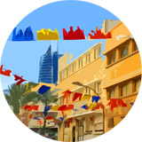
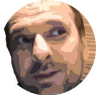

Сергей Лукьянов | МОЛИТВА и ВДОХНОВЕНИЕ
Молитва - как источник вдохновения. О призвании художника прославлять Бога. Может ли Творец использовать творчество грешного человека? Об этом размышляет Сергей Лукьянов (актер, пастор общины "Церковь Божья, г.Ярославль", Россия).

Сергей Лукьянов | В ДУХЕ И ИСТИНЕ 2/5
1. Что значит молиться в истине, когда совесть твоя не осуждает тебя?
2. Не может быть поклонения в осуждении, не возможно любить Бога, если есть вина пред Ним
3. Поклоняться в истине, значит поклоняться Ему в любви.

Сергей Лукьянов | ЗНАТЬ БОГА 3/5
1. Что значит жаждать живого общения со Всевышним?
2. Каково наше стремление и цель пред Богом, чего мы ожидаем от общения с Ним, в чем для нас наибольшая радость перед Ним?

Сергей Лукьянов | МОЛИТВА и ВДОХНОВЕНИЕ 4/5
1. Должна ли быть молитва вдохновенной? 2. Можно ли оценивать молитву по нашим ощущениям и переживаниям и их отсутствию? 3. Что такое вдохновение в молитве? 4. Вхождение в молитву через текст Библии. Молитва, как экстатическое, мистическое путешествие. 5. Как избежать превращения молитвы в рутину, как не протоптать в молитве колеи?

Сергей Лукьянов | СПОНТАННОЕ ПОКЛОНЕНИЕ 5/5
Что такое спонтанное (пророческое) поклонение? Существует ли опасность ошибиться в неотрепетированном поклонении? О страхе потерять контроль над ситуацией во время служения.
ПОЛНУЮ ВЕРСИЮ / ч.1 / см. здесь :
Сергей Лукьянов делится своим молитвенным опытом, об источниках вдохновения в молитве, "о подводных камнях", когда молитва становится рутиной...ПОЛНУЮ ВЕРСИЮ / ч.2 / см. здесь :
Что значит поклоняться в духе и истине? Какова связь творчество и поклонения ? Может ли Бог использовать творчество грешных музыкантов и неверующих художников ?
Что значит спонтанное поклонение ? Об этих вопросах рассуждает и делится своим молитвенным опытом Сергей Лукьянов